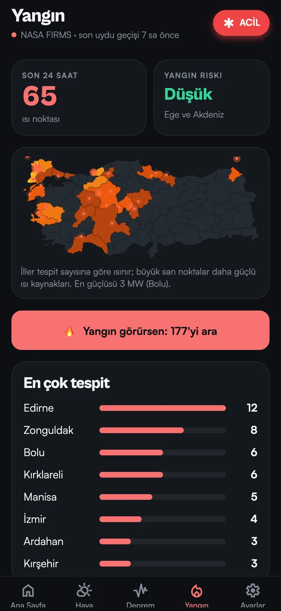
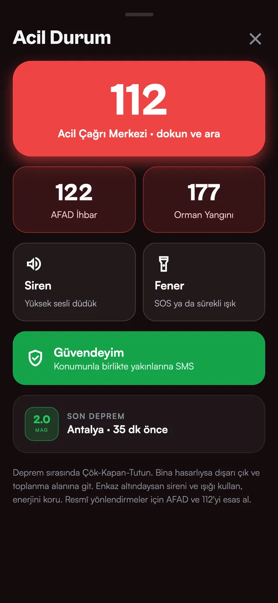

Sitede olmayan, cebinde olan
Uygulama mağazalarda yayınlandığında bildirimler ve acil durum araçları yalnızca uygulamada olacak.
Sana özel bildirimler
Seçtiğin büyüklüğün üzerindeki depremler, her sabah hava özeti, kuvvetli yağış, fırtına, don ve aşırı sıcak uyarıları, yakınında yeni bir yangın tespiti. Telefonun kilitliyken bile.
Fener SOS
Telefonunun feneri ve ekranı birlikte ... --- ... düzeninde yanıp söner; istersen sürekli ışık.
Siren
Sessizdeyken bile yüksek sesli düdük ve titreşim; enkaz altında yerini belli et.
Güvendeyim
Konumunla birlikte hazır mesaj, kaydettiğin 3 kişiye doğrudan SMS olarak.
Konumuna göre
Her depremin sana uzaklığı, bulunduğun yerin havası, yakınındaki yangınlar.
Gerçek uygulama
Akıcı geçişler, dokunsal geri bildirim, aşağı çekip yenileme; hesap ve reklam yok.
Uygulamayı yakından gör


İkisi de ücretsiz, uygulama daha fazlası
Site herkese açık bilgi kaynağı olarak kalıyor; kişisel ve acil durum özellikleri uygulamada.
Geçiş dönemi: uygulama mağazalarda yayınlanana kadar bildirimler ve acil durum araçları sitede de çalışmaya devam ediyor.